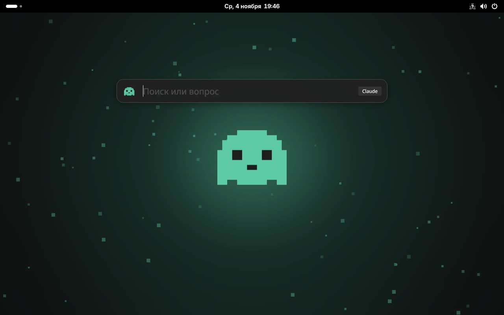

Нажмите клавишу в любом окне и спросите. Ответ появится прямо в строке: без браузера, вкладок и аккаунтов. Может работать без интернета.
macOS · Windows · Linux · MIT
Lumi ждёт в фоне и появляется поверх любой программы
Или начните вводить название программы или файла
Печатается сразу, как в чате. Можно уточнить, и разговор продолжится
Своя модель Lumi работает на вашем компьютере
Ответ печатается сразу, как в чате. Уточняйте, и разговор продолжится.
Начните вводить название, Enter откроет нужное.
Claude, ChatGPT и Gemini по вашей подписке, без API-ключей. Или любой сервис по ключу.
Интерфейс на пяти языках. Lumi отвечает на языке вопроса.
Сочетание по умолчанию или любое другое, какое удобно вам.
Модель Lumi работает прямо на вашем компьютере. Вопросы его не покидают: у Lumi нет своих серверов. Ставится одной кнопкой, а размер подбирается сам.
Старые ноутбуки. Самая быстрая.
Большинство компьютеров. Лучший баланс.
Мощные компьютеры. Самая умная.
Подключить модель → Ollama → Установить Lumi. Ollama Lumi тоже поставит сама.
Linux на основе Fedora, в котором Lumi уже стоит: открывается по Ctrl+Пробел, запускается при входе и помогает поставить нейросеть без интернета.

Перетащите Lumi в «Программы». Первый запуск: правый клик → «Открыть».
Lumi-macOS.dmgУстановщик без прав администратора. Если SmartScreen спросит: «Подробнее» → «Выполнить в любом случае».
Lumi-Setup.exeUbuntu, Debian, Mint: .deb. Fedora: .rpm. Остальные: AppImage, chmod +x и запуск.
Да. Lumi бесплатная и с открытым кодом. Платить нужно только за саму нейросеть, если вы выбираете платный сервис. Со своей моделью Lumi не нужно платить вовсе.
Для облачных нейросетей нужен. Своя модель Lumi работает полностью без интернета: он нужен только один раз, чтобы её скачать.
Только в тот сервис, который вы выбрали. Со своей моделью Lumi никуда: всё остаётся на компьютере. У Lumi нет своих серверов.
Lumi — независимый проект без платного сертификата Apple и Microsoft, поэтому система её «не знает». Код полностью открыт на GitHub.
Нет, это независимый проект. Claude, ChatGPT, Gemini, Mac и Spotlight — товарные знаки их владельцев.
Нашли ошибку или хотите новую функцию? Напишите, мы читаем каждое сообщение.